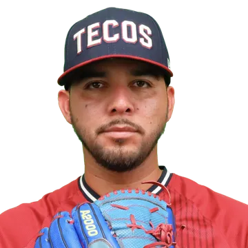
#6Adolfo Ramírez
Lanzador derecho · México
Relevista: 37 juegos, 3.13 de efectividad y 41 ponches.

El roster completo de Tecolotes de los Dos Laredos: 30 jugadores. Las cifras son de la temporada regular 2026.

#6Lanzador derecho · México
Relevista: 37 juegos, 3.13 de efectividad y 41 ponches.
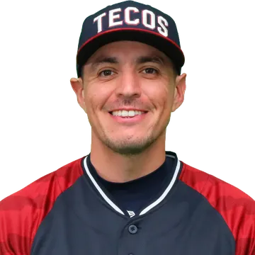
#18Lanzador derecho · Estados Unidos
Abridor: marca de 1-4, 6.22 de efectividad y 41 ponches en 14 aperturas.
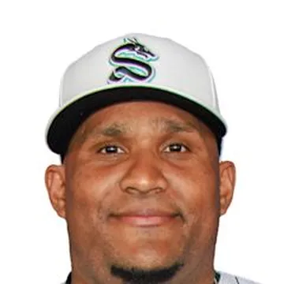
#12Lanzador derecho · República Dominicana
Abridor: marca de 0-1, 2.03 de efectividad y 10 ponches en 4 aperturas.
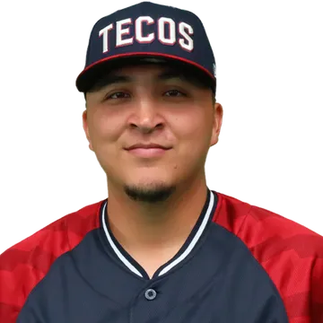
#50Lanzador derecho · México
Relevista: 36 juegos, 3.58 de efectividad y 41 ponches.
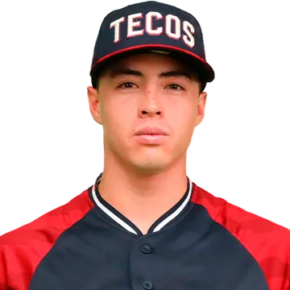
#94Lanzador derecho · México
Relevista: 20 juegos, 6.75 de efectividad y 27 ponches.
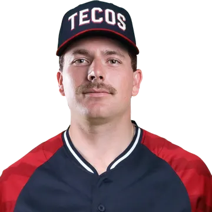
#82Lanzador zurdo · Estados Unidos
Abridor: marca de 0-8, 5.18 de efectividad y 57 ponches en 12 aperturas.
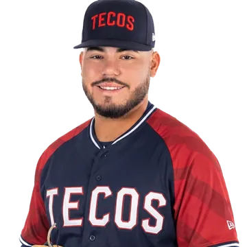
#49Lanzador derecho · México
Relevista: 19 juegos, 5.23 de efectividad y 20 ponches.
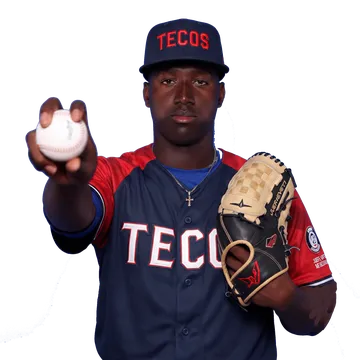
#53Lanzador derecho · República Dominicana
Relevista: 14 juegos, 7.20 de efectividad y 14 ponches.
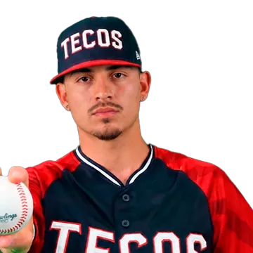
#39Lanzador zurdo · Estados Unidos
Relevista: 23 juegos, 3.20 de efectividad y 14 ponches.
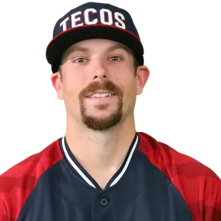
#25Lanzador derecho · Estados Unidos
Relevista: 47 juegos, 5.30 de efectividad y 59 ponches.
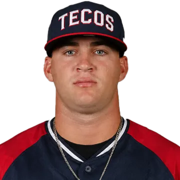
#13Lanzador derecho · Cuba
Abridor: marca de 2-1, 3.98 de efectividad y 26 ponches en 5 aperturas.
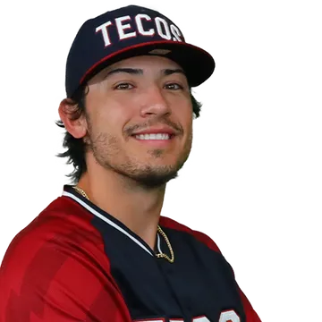
#5Lanzador derecho · Estados Unidos
Relevista: 38 juegos, 6.40 de efectividad y 29 ponches.
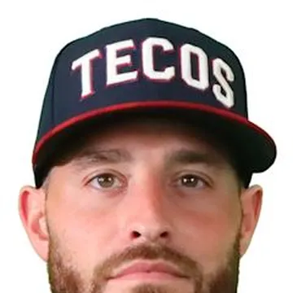
#71Lanzador derecho · Estados Unidos
Abridor: marca de 2-1, 5.97 de efectividad y 28 ponches en 6 aperturas.
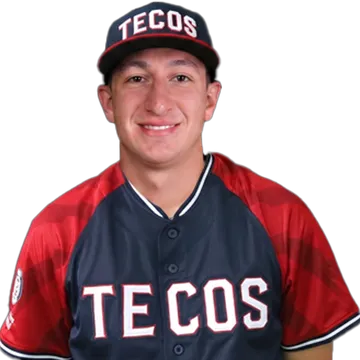
#30Lanzador derecho · México
Relevista: 9 juegos, 10.80 de efectividad y 5 ponches.
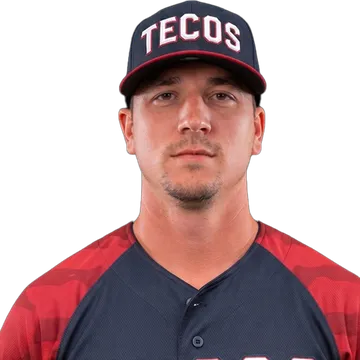
#54Lanzador derecho · Estados Unidos
Relevista: 28 juegos, 4.45 de efectividad y 16 ponches.
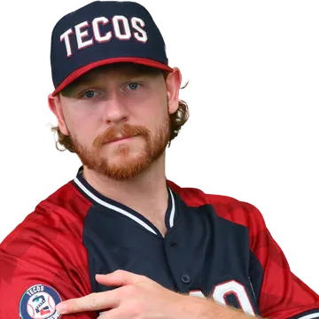
#45Lanzador derecho · Estados Unidos
Abridor: marca de 5-7, 5.74 de efectividad y 85 ponches en 17 aperturas.
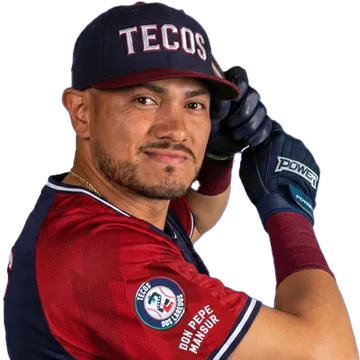
#7Receptor · México
Bateó .323 con 2 jonrones en 24 juegos.
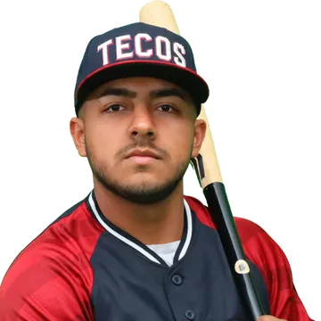
#77Receptor · México
Bateó .308 en 10 juegos.
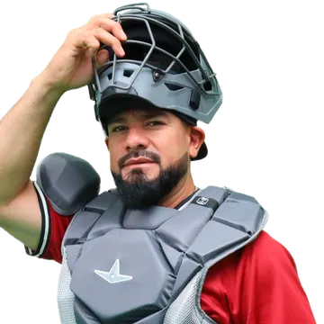
#44Receptor · México
Bateó .169 con 5 jonrones y 20 producidas en 55 juegos.
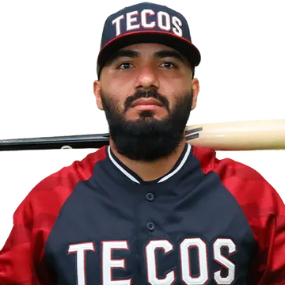
#65Primera base · México
Bateó .184 en 37 juegos.
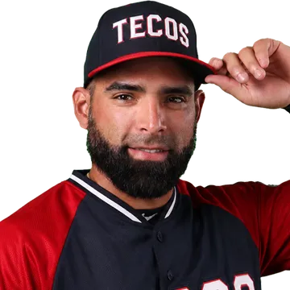
#22Shortstop · Venezuela
Bateó .304 con 1 jonrón en 26 juegos.
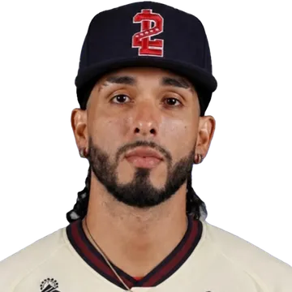
#24Segunda base · Panamá
Bateó .210 con 2 jonrones y 16 producidas en 48 juegos.
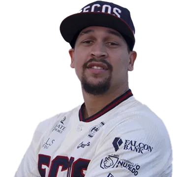
#3Shortstop · República Dominicana
Bateó .254 con 4 jonrones y 20 producidas en 39 juegos.
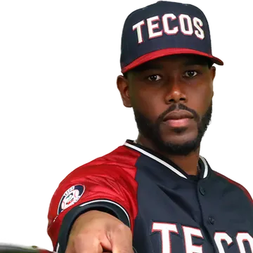
#23Tercera base · República Dominicana
Bateó .314 con 5 jonrones y 44 producidas en 80 juegos.
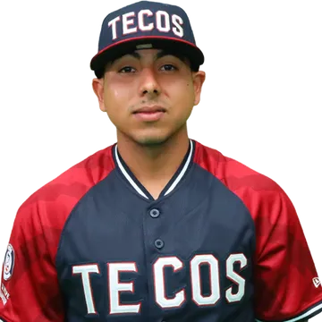
#86Shortstop · México
Bateó .224 con 2 producidas en 30 juegos.
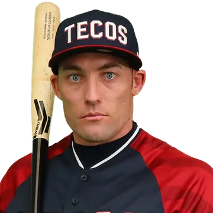
#99Jardinero · Estados Unidos
Líder de bases robadas del equipo, con 22. Bateó .282.
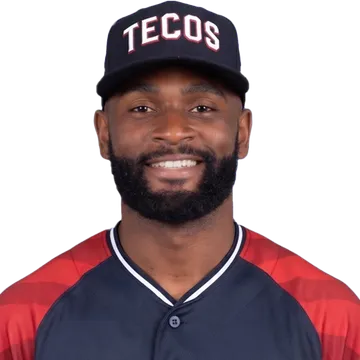
#75Jardinero · Estados Unidos
Bateó .206 con 1 jonrón y 7 producidas en 32 juegos.
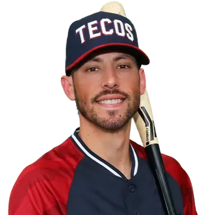
#11Jardín derecho · Estados Unidos
Bateó .184 con 3 jonrones y 19 producidas en 68 juegos.
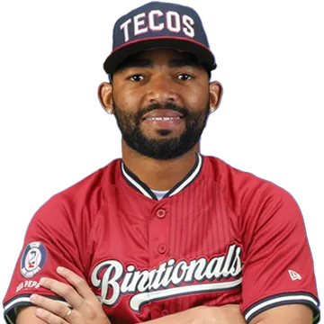
#37Jardinero · Cuba
Jardinero cubano, ex prospecto de los Medias Blancas de Chicago.
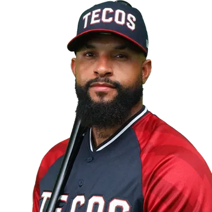
#81Jardín izquierdo · República Dominicana
Líder del equipo en jonrones (23), producidas (74) y anotadas (47).
Estadísticas oficiales de la Liga Mexicana de Beisbol, temporada regular 2026.